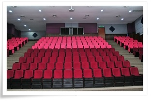

The auditorium is can easily accommodate 220 people and suitable for activities like talks, workshops and seminars.
Auditorium usage is permitted for any official university activities, equipped with PA system and campus wide computer networks.
Location on the 1st floor.
Reservation can be made online. Please go to http://ppdsnz.umt.edu.my.
BACK